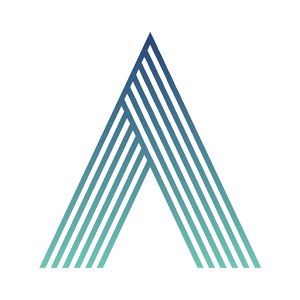

Hi, I'm Seung Wook Kim.
I am a PhD student at the University of Toronto, advised by Prof. Sanja Fidler.
I also work as a research scientist at NVIDIA.
Before that, I obtained my BSc and MSc in computer science from the same university.
My research interests include deep learning and its applications in computer vision and natural language processing.
Specifically, I am interested in simulation technologies and teaching machines in a way which they can continually improve as humans do.
Understanding the rationale behind how models behave is also one of my interests.
Apart from research, I like to spend time playing the piano and guitar.
Applying machine learning to the music domain is one of the things I'd like to work on in the future.
After getting the bachelor's degree, I worked in Korea for some time.
I am also married to my wonderful wife, Hyeonseon.
Conference Publications
EditGAN: High-Precision Semantic Image Editing
Huan Ling, Karsten Kreis, Daiqing Li, Seung Wook Kim, Antonio Torralba, Sanja Fidler
[Project page]
Conference on Neural Information Processing Systems (NeurIPS) 2021
DriveGAN: Towards a Controllable High-Quality Neural Simulation
Seung Wook Kim, Jonah Philion, Antonio Torralba, Sanja Fidler
[Project page]
(Oral)
IEEE Conference on Computer Vision and Pattern Recognition (CVPR) 2021
Variational Amodal Object Completion
Huan Ling, David Acuna, Karsten Kreis, Seung Wook Kim, Sanja Fidler
[Project page]
Conference on Neural Information Processing Systems (NeurIPS) 2020
Learning to Simulate Dynamic Environments with GameGAN
Seung Wook Kim, Henry Zhou, Jonah Philion, Antonio Torralba, Sanja Fidler
[Project page]
IEEE Conference on Computer Vision and Pattern Recognition (CVPR) 2020
Visual Reasoning by Progressive Module Networks
Seung Wook Kim, Makarand Tapaswi, Sanja Fidler
[Project page]
International Conference on Learning Representations (ICLR) 2019
Keep and Learn: Continual Learning by Constraining the Latent Space for Knowledge Preservation in Neural Networks
Hyo-Eun Kim, Seung Wook Kim, Jaehwan Lee
International Conference on Medical Image Computing and Computer Assisted Intervention (MICCAI) 2018
Journal Publications
Self-supervised driven consistency training for annotation efficient histopathology image analysis
Chetan L. Srinidhi, Seung Wook Kim, Fu-Der Chen, Anne L. Martel
[Paper]
Medical Image Analysis
Workshop Publications
Cascaded Pyramid Network for 3D Human Pose Estimation Challenge
Sungeun Hong, Wonjin Jung, Ilsang Woo, Seung Wook Kim
European Conference on Computer Vision (ECCV PoseTrack Workshop) 2018
Transferring Knowledge to Smaller Network with Class-Distance Loss
Seung Wook Kim, Hyo-Eun Kim
International Conference on Learning Representations (ICLR Workshop Track) 2017
Combining word prediction and г-ary Huffman coding for text entry
Seung Wook Kim, Frank Rudzicz
Workshop on Speech and Language Processing for Assistive Technologies (SLPAT) 2016
Preprints
The Shmoop Corpus: A Dataset of Stories with Loosely Aligned Summaries
Atef Chaudhury, Makarand Tapaswi, Seung Wook Kim, Sanja Fidler
[Github]
arXiv: 1912.13082
Education
University of Toronto, PhD Machine Learning
University of Toronto, MSc Machine Learning (GPA 4.00/4.00)
Sep. 2017 - Jan. 2019
University of Toronto, BSc Computer Science (GPA 3.99/4.00)
Sep. 2011 - Jun. 2016
Work Experience

NVIDIA, Research Scientist
(Toronto, Canada) Jan. 2020 - Present
NVIDIA, Research Intern
(Toronto, Canada) Jan. 2019 - Dec. 2019

SKTbrain, Research Intern
(Seoul, Korea) May 2018 - Sept. 2018
Lunit Inc., Research Scientist
(Seoul, Korea) Jun. 2016 - Aug. 2017

Auvenir., Research Scientist
Auvenir., Research Scientist
(Toronto, Canada) Sep. 2015 - Apr. 2016